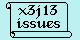
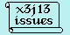

A | B | C | D | E | F | G | H | I | K | L | M | N | O | P | Q | R | S | T | U | V | W | X | Y | Z | Non-Alphabetic
![[Common Lisp HyperSpec (TM)]](../Graphics/HyperSpec-Small.gif)
![[Previous]](../Graphics/Prev.gif)
![[Up]](../Graphics/Up.gif)
![[Next]](../Graphics/Next.gif)
![[Contents]](../Graphics/Contents.gif)
![[Index]](../Graphics/Index.gif)
![[Symbols]](../Graphics/Symbols.gif)
![[Glossary]](../Graphics/Glossary.gif) 
